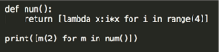
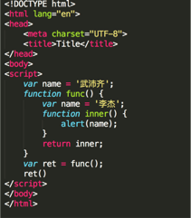
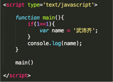
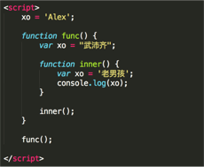
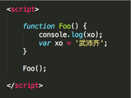
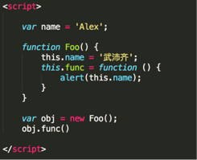
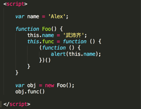

为什么学习Python？
通过什么途径学习的Python？
Python和Java、PHP、C、C#、C++等其他语言的对比？
简述解释型和编译型编程语言？
Python解释器种类以及特点？
位和字节的关系？
b、B、KB、MB、GB 的关系？
请至少列举5个 PEP8 规范（越多越好）。
通过代码实现如下转换：
二进制转换成十进制：v = “0b1111011”
十进制转换成二进制：v = 18
八进制转换成十进制：v = “011”
十进制转换成八进制：v = 30
十六进制转换成十进制：v = “0x12”
十进制转换成十六进制：v = 87
请编写一个函数实现将IP地址转换成一个整数。
如 10.3.9.12 转换规则为：
10 00001010
3 00000011
9 00001001
12 00001100再将以上二进制拼接起来计算十进制结果：00001010 00000011 00001001 00001100 = ？
python递归的最大层数？
v1 = 1 or 3
v2 = 1 and 3
v3 = 0 and 2 and 1
v4 = 0 and 2 or 1
v5 = 0 and 2 or 1 or 4
v6 = 0 or Flase and 1ascii、unicode、utf-8、gbk 区别？
字节码和机器码的区别？
三元运算规则以及应用场景？
列举 Python2和Python3的区别？
用一行代码实现数值交换：
a = 1
b = 2
Python3和Python2中 int 和 long的区别？
xrange和range的区别？
文件操作时：xreadlines和readlines的区别？
列举布尔值为False的常见值？
字符串、列表、元组、字典每个常用的5个方法？
lambda表达式格式以及应用场景？
pass的作用？
*arg和**kwarg作用
is和==的区别
简述Python的深浅拷贝以及应用场景？
Python垃圾回收机制？
Python的可变类型和不可变类型？
v = dict.fromkeys(['k1','k2'],[])
v[‘k1’].append(666)
print(v)
v[‘k1’] = 777
print(v)求结果：

列举常见的内置函数？
filter、map、reduce的作用？
一行代码实现9*9乘法表
如何安装第三方模块？以及用过哪些第三方模块？
至少列举8个常用模块都有那些？
re的match和search区别？
什么是正则的贪婪匹配？
求结果： a. [ i % 2 for i in range(10) ] b. ( i % 2 for i in range(10) )
求结果： a. 1 or 2 b. 1 and 2 c. 1 < (2==2) d. 1 < 2 == 2
def func(a,b=[]) 这种写法有什么坑？
如何实现 “1,2,3” 变成 [‘1’,’2’,’3’] ?
如何实现[‘1’,’2’,’3’]变成[1,2,3] ?
比较： a = [1,2,3] 和 b = [(1),(2),(3) ] 以及 b = [(1,),(2,),(3,) ] 的区别？
如何用一行代码生成[1,4,9,16,25,36,49,64,81,100] ?
一行代码实现删除列表中重复的值 ?
如何在函数中设置一个全局变量 ?
logging模块的作用？以及应用场景？
请用代码简答实现stack 。
常用字符串格式化哪几种？
简述 生成器、迭代器、可迭代对象 以及应用场景？
用Python实现一个二分查找的函数。
谈谈你对闭包的理解？
os和sys模块的作用？
如何生成一个随机数？
如何使用python删除一个文件？
谈谈你对面向对象的理解？
Python面向对象中的继承有什么特点？
面向对象深度优先和广度优先是什么？
面向对象中super的作用？
是否使用过functools中的函数？其作用是什么？
列举面向对象中带爽下划线的特殊方法，如：new、init
如何判断是函数还是方法？
静态方法和类方法区别？
列举面向对象中的特殊成员以及应用场景
1、2、3、4、5 能组成多少个互不相同且无重复的三位数
什么是反射？以及应用场景？
metaclass作用？以及应用场景？
用尽量多的方法实现单例模式。
装饰器的写法以及应用场景。
异常处理写法以及如何主动跑出异常（应用场景）
什么是面向对象的mro
isinstance作用以及应用场景？
Given an array of integers, return indices of the two numbers such that they add up to a specific target.You may assume that each input would
have exactly one solution, and you may not use the same element twice.
Example:
Given nums = [2, 7, 11, 15], target = 9,
Because nums[0] + nums[1] = 2 + 7 = 9,
return [0, 1]json序列化时，可以处理的数据类型有哪些？如何定制支持datetime类型？
json序列化时，默认遇到中文会转换成unicode，如果想要保留中文怎么办？
什么是断言？应用场景？
有用过with statement吗？它的好处是什么？
使用代码实现查看列举目录下的所有文件。
简述 yield和yield from关键字。
常见SQL（必备）
如何高效的找到redis中所有以oldboy开头的key？
谈谈你对http协议的认识。
谈谈你对websocket协议的认识。
什么是magic string ？
如何创建响应式布局？
你曾经使用过哪些前端框架？
什么是ajax请求？并使用jQuery和XMLHttpRequest对象实现一个ajax请求。
如何在前端实现轮训？
如何在前端实现长轮训？
vuex的作用？
vue中的路由的拦截器的作用？
axios的作用？
列举vue的常见指令。
简述jsonp及实现原理？
是什么cors ？
列举Http请求中常见的请求方式？
列举Http请求中的状态码？
列举Http请求中常见的请求头？
看图写结果：

看图写结果：

看图写结果：

看图写结果：

看图写结果：

看图写结果：

django、flask、tornado框架的比较？
什么是wsgi？
django请求的生命周期？
列举django的内置组件？
列举django中间件的5个方法？以及django中间件的应用场景？
简述什么是FBV和CBV？
django的request对象是在什么时候创建的？
如何给CBV的程序添加装饰器？
列举django orm 中所有的方法（QuerySet对象的所有方法）
only和defer的区别？
select_related和prefetch_related的区别？
filter和exclude的区别？
列举django orm中三种能写sql语句的方法。
django orm 中如何设置读写分离？
F和Q的作用?
values和values_list的区别？
如何使用django orm批量创建数据？
django的Form和ModeForm的作用？
django的Form组件中，如果字段中包含choices参数，请使用两种方式实现数据源实时更新。
django的Model中的ForeignKey字段中的on_delete参数有什么作用？
django中csrf的实现机制？
django如何实现websocket？
基于django使用ajax发送post请求时，都可以使用哪种方法携带csrf token？
django中如何实现orm表中添加数据时创建一条日志记录。
django缓存如何设置？
django的缓存能使用redis吗？如果可以的话，如何配置？
django路由系统中name的作用？
django的模板中filter和simple_tag的区别？
django-debug-toolbar的作用？
django中如何实现单元测试？
解释orm中 db first 和 code first的含义？
django中如何根据数据库表生成model中的类？
使用orm和原生sql的优缺点？
简述MVC和MTV
django的contenttype组件的作用？
谈谈你对restfull 规范的认识？
接口的幂等性是什么意思？
什么是RPC？
Http和Https的区别？
为什么要使用django rest framework框架？
django rest framework框架中都有那些组件？
django rest framework框架中的视图都可以继承哪些类？
简述 django rest framework框架的认证流程。
django rest framework如何实现的用户访问频率控制？
Flask框架的优势？
Flask框架依赖组件？
Flask蓝图的作用？
列举使用过的Flask第三方组件？
简述Flask上下文管理流程?
Flask中的g的作用？
Flask中上下文管理主要涉及到了那些相关的类？并描述类主要作用？
为什么要Flask把Local对象中的的值stack 维护成一个列表？
Flask中多app应用是怎么完成？
在Flask中实现WebSocket需要什么组件？
wtforms组件的作用？
Flask框架默认session处理机制？
解释Flask框架中的Local对象和threading.local对象的区别？
Flask中 blinker 是什么？
SQLAlchemy中的 session和scoped_session 的区别？
SQLAlchemy如何执行原生SQL？
ORM的实现原理？
DBUtils模块的作用？
以下SQLAlchemy的字段是否正确？如果不正确请更正：
from datetime import datetime
from sqlalchemy.ext.declarative
import declarative_base
from sqlalchemy import Column, Integer, String, DateTime
Base = declarative_base()
class UserInfo(Base):
__tablename__ = 'userinfo'
id = Column(Integer, primary_key=True, autoincrement=True)
name = Column(String(64), unique=True)
ctime = Column(DateTime, default=datetime.now())SQLAchemy中如何为表设置引擎和字符编码？
SQLAchemy中如何设置联合唯一索引？
简述Tornado框架的特点。
简述Tornado框架中Future对象的作用？
Tornado框架中如何编写WebSocket程序？
Tornado中静态文件是如何处理的？如： <link href="{{static_url("commons.css")}}" rel="stylesheet" />
Tornado操作MySQL使用的模块？
Tornado操作redis使用的模块？
简述Tornado框架的适用场景？
git常见命令作用：
简述以下git中stash命令作用以及相关其他命令。
git 中 merge 和 rebase命令 的区别。
公司如何基于git做的协同开发？
如何基于git实现代码review？
git如何实现v1.0 、v2.0 等版本的管理？
什么是gitlab？
github和gitlab的区别？
如何为github上牛逼的开源项目贡献代码？
git中 .gitignore文件的作用?
什么是敏捷开发？
简述 jenkins 工具的作用?
公司如何实现代码发布？
简述 RabbitMQ、Kafka、ZeroMQ的区别？
RabbitMQ如何在消费者获取任务后未处理完前就挂掉时，保证数据不丢失？
RabbitMQ如何对消息做持久化？
RabbitMQ如何控制消息被消费的顺序？
以下RabbitMQ的exchange type分别代表什么意思？如：fanout、direct、topic。
简述 celery 是什么以及应用场景？
简述celery运行机制。
celery如何实现定时任务？
简述 celery多任务结构目录？
celery中装饰器 @app.task 和 @shared_task的区别？
简述 requests模块的作用及基本使用？
简述 beautifulsoup模块的作用及基本使用？
简述 seleninu模块的作用及基本使用?
scrapy框架中各组件的工作流程？
在scrapy框架中如何设置代理（两种方法）？
scrapy框架中如何实现大文件的下载？
scrapy中如何实现限速？
scrapy中如何实现暂定爬虫？
scrapy中如何进行自定制命令？
scrapy中如何实现的记录爬虫的深度？
scrapy中的pipelines工作原理？
scrapy的pipelines如何丢弃一个item对象？
简述scrapy中爬虫中间件和下载中间件的作用？
scrapy-redis组件的作用？
scrapy-redis组件中如何实现的任务的去重？
scrapy-redis的调度器如何实现任务的深度优先和广度优先？
简述 vitualenv 及应用场景?
简述 pipreqs 及应用场景？
在Python中使用过什么代码检查工具？
简述 saltstack、ansible、fabric、puppet工具的作用？
B Tree和B+ Tree的区别？
请列举常见排序并通过代码实现任意三种。
请列举常见查找并通过代码实现任意三种。
请列举你熟悉的设计模式？
有没有刷过leetcode？
列举熟悉的的Linux命令。
公司线上服务器是什么系统？
解释 PV、UV 的含义？
解释 QPS的含义？
uwsgi和wsgi的区别？
supervisor的作用？
什么是反向代理？
简述SSH的整个过程。
有问题都去那些找解决方案？
是否有关注什么技术类的公众号？
最近在研究什么新技术？
是否了解过领域驱动模型？